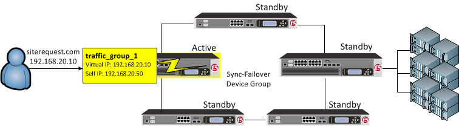
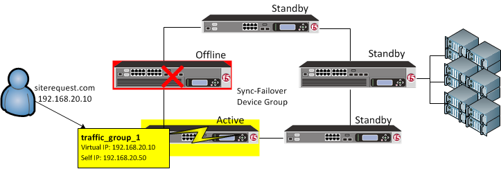
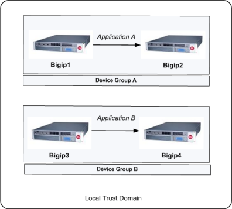
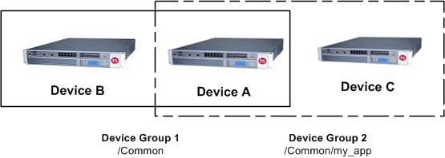

Updated Date: 07/07/2026
Working with Device Groups
A Sync-Failover device group contains devices that synchronize their configuration data and fail over to one another when a device becomes unavailable. A Sync-Failover device group supports a maximum of eight devices.


For devices in a Sync-Failover group, the BIG-IP system uses both the device group and the traffic group attributes of a folder to make decisions about which devices to target for synchronizing the contents of the folder, and which application-related configuration objects to include in failover.
You can control the way that the BIG-IP chooses a target failover device. This control is especially useful when a device group contains heterogeneous hardware platforms that differ in load capacity, because you can ensure that when failover occurs, the system will choose the device with the most available resource to process the application traffic.
You can use a Sync-Failover device group in a variety of ways. This sample configuration shows two separate Sync-Failover device groups in the local trust domain. Device group A is a standard active-standby configuration. Prior to failover, only Bigip1 processes traffic for application A. This means that Bigip1 and Bigip2 synchronize their configurations, and Bigip1 fails over to Bigip2 if Bigip1 becomes unavailable. Bigip1 cannot fail over to Bigip3 or Bigip4 because those devices are in a separate device group.
Device group B is also a standard active-standby configuration, in which Bigip3 normally processes traffic for application B. This means that Bigip3 and Bigip4 synchronize their configurations, and Bigip3 fails over to Bigip4 if Bigip3 becomes unavailable. Bigip3 cannot fail over to Bigip1 or Bigip2 because those devices are in a separate device group.

The following configuration restrictions apply to Sync-Failover device groups:
- A specific BIG-IP® device in a trust domain can belong to one Sync-Failover device group only.
- On each device in a Sync-Failover device group, the BIG-IP® system automatically assigns the device group name to the
rootand/Commonfolders. This ensures that the system synchronizes any traffic groups for that device to the correct devices in the local trust domain. - The BIG-IP system creates all device groups and traffic-groups in the
/Commonfolder, regardless of the partition to which the system is currently set. - If no Sync-Failover device group is defined on a device, then the system sets the device group value that is assigned to the
rootand/Commonfolders toNone. - By default, on each device, the BIG-IP system assigns a Sync-Failover device group to any sub-folders of the
rootor/Commonfolders that inherit thedevice groupattribute. - You can configure a maximum of 127 floating traffic groups for a Sync-Failover device group.
Important: If you provision the Virtual Clustered Multiprocessing (vCMP®) feature on an appliance, the appliance hosts multiple virtual BIG-IP devices, known as vCMP guests. To maximize high-availability, F5 strongly recommends that when creating a Sync-Failover device group, each vCMP guest that you want to include in the device group resides on a separate appliance.
This task establishes failover capability between two or more BIG-IP devices. If an active device in a Sync-Failover device group becomes unavailable, the configuration objects fail over to another member of the device group and traffic processing is unaffected. You perform this task on any one of the authority devices within the local trust domain.
Repeat this task for each Sync-Failover device group that you want to create for your network configuration.
-
On the Main tab, click Device Management > Device Groups.
-
On the Device Groups list screen, click Create.
The New Device Group screen opens.
-
In the Name field, type a name for the device group.
-
From the Group Type list, select Sync-Failover.
-
In the Description field, type a description of the device group.
This setting is optional.
-
From the Configuration list, select Advanced.
-
For the Members setting, select a host name from the Available list for each BIG-IP device that you want to include in the device group, including the local device. Use the Move button to move the host name to the Includes list.
The Available list shows any devices that are members of the device’s local trust domain but not currently members of a Sync-Failover device group. A device can be a member of one Sync-Failover group only. Also, for vCMP-provisioned systems on platforms that contain a hardware security module (HSM) supporting FIPS multi-tenancy, the FIPS partitions on the guests in the device group must be identical with respect to the number of SSL cores allocated to the guest’s FIPS partition and the maximum number of private SSL keys that the guest can store on the HSM.
-
From the Sync Type list:
- Select Automatic with Incremental Sync when you want the BIG-IP system to automatically sync the most recent BIG-IP configuration changes from a device to the other members of the device group. In this case, the BIG-IP system syncs the configuration data whenever the data changes on any device in the device group.
- Select Manual with Incremental Sync when you want to manually initiate a config sync operation. In this case, the BIG-IP system syncs the latest BIG-IP configuration changes from the device you choose to the other members of the device group. We strongly recommend that you perform a config sync operation whenever configuration data changes on one of the devices in the device group.
- Select Manual with Full Sync when you want to manually initiate a config sync operation. In this case, the BIG-IP system syncs the full set of BIG-IP configuration data from the device you choose to the other members of the device group. We strongly recommend that you perform a config sync operation whenever configuration data changes on one of the devices in the device group.
-
In the Maximum Incremental Sync Size (KB) field, retain the default value of
1024, or type a different value.This value specifies the total size of configuration changes that can reside in the incremental sync cache. If the total size of the configuration changes in the cache exceeds the specified value, the BIG-IP system performs a full sync whenever the next config sync operation occurs.
-
For the Network Failover setting, select or clear the check box:
- Select the check box if you want device group members to handle failover communications by way of network connectivity. This is the default value and is required for active-active configurations.
- Clear the check box if you want device group members to handle failover communications by way of serial cable (hard-wired) connectivity. For active-active configurations, you must select network failover, as opposed to serial-cable (hard-wired) connectivity.
-
In the Link Down Time on Failover field, use the default value of
0.0, or specify a new value.This setting specifies the amount of time, in seconds, that interfaces for any external VLANs are down when a traffic group fails over and goes to the standby state. Specifying a value other than
0.0for this setting causes other vendor switches to use the specified time to learn the MAC address of the newly-active device.Important: This setting is a system-wide setting, and does not apply to this device group only. Specifying a value in this field causes the BIG-IP system to assign this value to the global bigdb variable failover.standby.linkdowntime.
-
Click Finished.
You can perform this task when you want to display a list of the device groups of which the local device is a member. This list also displays other information such as the sync status of each device group and whether Auto Sync is enabled.
Note: Among this list of device groups is a special Sync-Only device group corresponding to the local trust domain. The BIG-IP system automatically creates this device group to internally sync trust information among the devices in the local trust domain, on an ongoing basis. You cannot delete this special device group.
-
On the Main tab, click Device Management > Overview.
-
In the Device Groups area of the screen, in the Name column, view the list of device groups.
After you perform this task, the list shows all device groups that include the local device as a member.
You can list the members of a device group and view information about them, such as their management IP addresses and host names.
-
On the Main tab, click Device Management > Device Groups.
-
In the Group Name column, click the name of the relevant device group.
The screen shows a list of the device group members.
You must ensure that the device you are adding is a member of the local trust domain.
You can use this procedure to add a member to an existing device group.
-
On the Main tab, click Device Management > Device Groups.
-
In the Group Name column, click the name of the relevant device group.
-
In the Members area of the screen, select a host name from the Available list for each BIG-IP device that you want to include in the device group. Use the Move button to move the host name to the Selected list.
The Available list shows any devices that are members of the device’s local trust domain but not currently members of a Sync-Failover device group. If you are attempting to add a member to a Sync-Failover group and you do not see the member name in the list, it is possible that the device is already a member of another Sync-Failover device group. A device can be a member of one Sync-Failover group only.
-
Click Update.
-
On the Main tab, click Device Management > Overview.
-
In the Devices area of the screen, make sure that the device you are logged into is selected.
-
In the Sync Options area of the screen, click Push the selected device configuration to the group.
Sometimes when one BIG-IP® object references another, one of the objects gets synchronized to a particular device, but the other object does not. This can result in an invalid device group configuration.
For example, suppose you create two device groups that share some devices but not all. In the following illustration, Device A is a member of both Device Group 1 and Device Group 2.

Device Group 1 is associated with folder /Common, and Device Group 2 is associated with the folder /Common/my_app. This configuration causes Device A to synchronize all of the data in folder /Common to Device B in Device Group 1. The only data that Device A can synchronize to Device C in Device Group 2 is the data in the folder /Common/my_app, because this folder is associated with Device Group 2 instead of Device Group 1.
Now suppose that you create a pool in the /Common/my_app folder, which is associated with Device Group 2. When you create the pool members in that folder, the BIG-IP system automatically creates the associated node addresses and puts them in folder /Common. This results in an invalid configuration, because the node objects in folder /Common do not get synchronized to the device on which the nodes’ pool members reside, Device C. When an object is not synchronized to the device on which its referenced objects reside, an invalid configuration results.